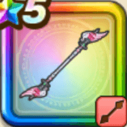

エンジェルロッド
攻略班 9.0点 / ザメハムーンサルト天使のうたごえつるぎの演舞ウルトラハッスルダンス華麗なる舞
くわしい特徴
【レベル別習得スキル】 Lv1【大神官】さいだいHP+10 Lv1ザメハ（消費MP：9）仲間全員のねむりをなおす Lv10ムーンサルト（消費MP：3）飛行系に威力250%それ以外の系統には130%の体技ダメージを与える Lv15天使のうたごえ（消費MP：25）仲間ひとりをHP50％で復活させる Lv20つるぎの演舞（消費MP：32）仲間全員のこうげき力を上げてランダムな敵に固定ダメージを与える攻撃を4回行う Lv30ウルトラハッスルダンス（消費MP：62）仲間全員のHPを回復し、まれに敵1体を1ターンの間魅了する(この魅了は敵の耐性や味方の成功率UPの影響を受けない) Lv35戦闘終了時にMPを10回復する Lv40さいだいMP+12 Lv45かいふく魔力+12 Lv50華麗なる舞（消費MP：15）戦闘開始時に自分のみかわし率を上げてたまに追加でランダムな仲間のみかわし率を上げる(効果4ターン) 【限界突破スキル】 1凸とくぎHP回復効果+5% 2凸ターン開始時MPを1回復する 3凸とくぎHP回復効果+5% 4凸ターン開始時MPを1回復する